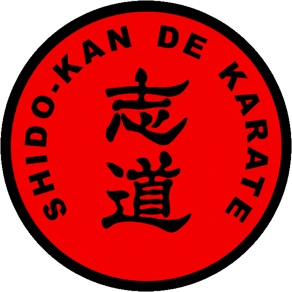
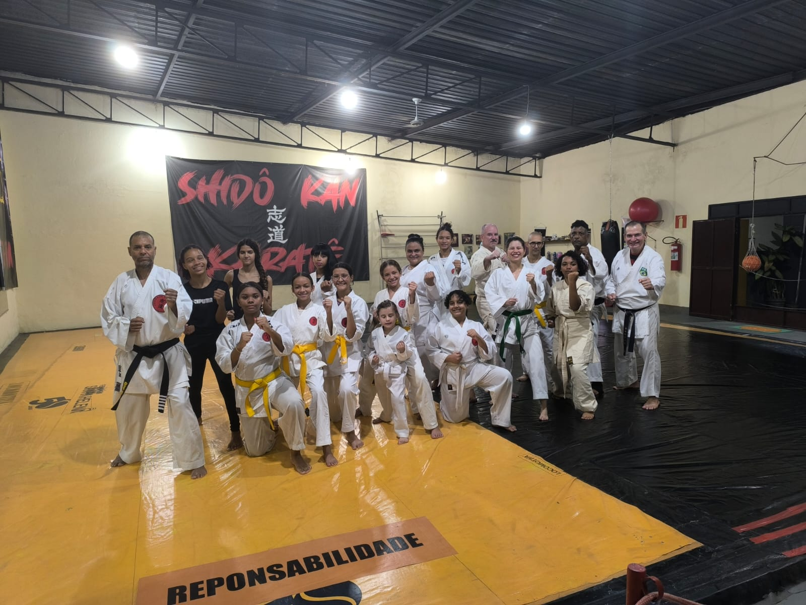
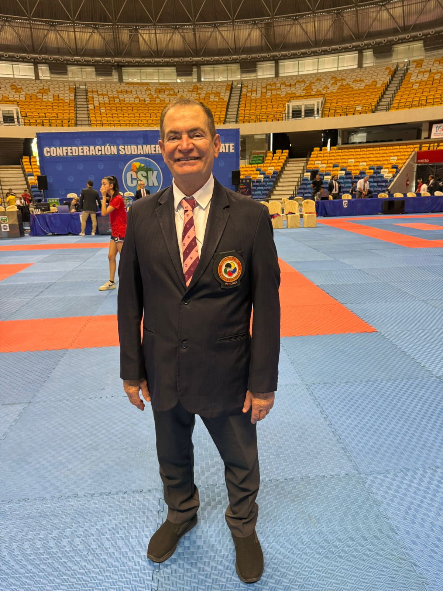

Disciplina.
Respeito.
Karatê.
Karatê Shitō-Ryū para crianças, jovens e adultos. Mais do que golpes — formamos caráter, foco e confiança dentro e fora do tatame.

para formação
do caráter
caminho da
sinceridade
espírito de
empenho
à cortesia
atos brutais

Uma família
sobre o tatame
No Shidô-Kan, o karatê Shitō-Ryū é ensinado como um caminho — 「志道」, a busca pela vontade firme e pelo aperfeiçoamento de si mesmo.
Do mais novo faixa-branca ao mestre faixa-preta, treinamos juntos disciplina, respeito e responsabilidade. Aqui cada conquista é celebrada — e ninguém treina sozinho.
Escolha sua turma
Sensei
Rainério Costa
7º Dan e árbitro reconhecido pela Confederação Sul-Americana de Karatê, o Sensei Rainério Costa dedicou a vida ao Shitō-Ryū — formando atletas, campeões e, acima de tudo, pessoas de caráter.
Mais do que ensinar golpes, ele transmite a tradição, a disciplina e o respeito que fazem do Shidô-Kan uma verdadeira família sobre o tatame.

Galeria
Comece seu caminho hoje
Primeira aula experimental gratuita. Venha conhecer o tatame, a equipe e a tradição Shidô-Kan.